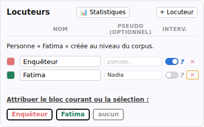
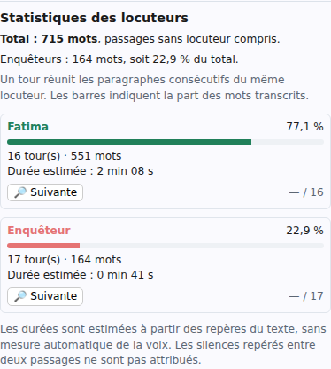

Importer et traiter
Identifier les locuteurs et les tours de parole
Les locuteurs indiquent qui parle dans un entretien. Après l’import, vérifiez les noms et l’attribution des passages : une transcription peut avoir confondu deux voix ou laissé une prise de parole sans nom.
Cette page décrit le travail dans un corpus local. Ouvrez l’entretien avec le crayon de sa carte, puis cliquez sur l’onglet Locuteurs à gauche de la transcription.
Pour essayer sans modifier votre enquête, utilisez une copie de Entretiens déjà importés, entretien 1Coordinatrice. Dans cet exemple fictif, Speaker 1 pose les questions et Speaker 0 est Fatima, la coordinatrice bénévole.
Renommer et ajouter les locuteurs
- Cliquez sur le crayon Modifier les locuteurs pour ouvrir la fenêtre de gestion.
- Dans la colonne Nom, remplacez le nom importé par un nom ou un libellé utile à votre enquête.
- Quittez le champ, par exemple avec Tabulation, pour appliquer le changement.
- Vérifiez les noms affichés au-dessus des prises de parole dans la transcription.
Dans l’exemple, vous pouvez renommer Speaker 1 en Enquêteur et Speaker 0 en Fatima. Le nouveau nom s’applique à toutes les paroles de ce locuteur dans cet entretien. Il ne remplace pas les mots du texte.
Si une voix manque, cliquez sur + Locuteur dans la fenêtre de gestion, puis nommez la nouvelle ligne. L’ajout ne lui attribue encore aucune parole : utilisez ensuite les boutons d’attribution décrits ci-dessous.
La petite case colorée à gauche du nom permet de choisir la couleur de ses libellés. La couleur aide au repérage, mais ne change ni le rôle ni l’attribution des paroles.

Indiquer qui pose les questions
Activez l’interrupteur de la colonne Interv., marqué d’un ?, pour la personne qui mène l’entretien. Ses prises de parole apparaissent en italique et son nom est suivi d’un point d’interrogation.
Le nom « Enquêteur » ne suffit pas à activer ce rôle. Vous n’avez pas non plus à ajouter vous-même un point d’interrogation au nom. Pour retirer le rôle, désactivez le même interrupteur.
Corriger l’attribution d’un passage
Utilisez les boutons sous Attribuer le bloc courant ou la sélection :, et non les champs de nom.
Pour un paragraphe entier
- Cliquez dans le paragraphe concerné, sans sélectionner de texte.
- Cliquez sur le bouton portant le nom du bon locuteur.
- Vérifiez le nom au-dessus de la prise de parole.
Ce geste ne réattribue pas automatiquement tous les autres paragraphes du même tour. Des paragraphes consécutifs attribués au même locuteur sont présentés comme un seul tour de parole : son nom n’est pas répété à chaque paragraphe.
Pour quelques mots ou plusieurs paragraphes
- Sélectionnez à la souris le passage prononcé par la personne.
- Cliquez sur son bouton d’attribution.
- Relisez le début et la fin de la sélection pour vérifier la séparation des voix.
La sélection est étendue aux mots entiers. Si vous attribuez seulement une partie d’un paragraphe, SonalPi la sépare du texte qui précède et qui suit pour pouvoir lui donner un autre locuteur. Les mots ne sont pas remplacés et les codages existants restent associés au texte.
Le bouton aucun retire l’attribution sur le paragraphe courant ou la sélection. Il conserve le texte et laisse le passage sans locuteur ; il ne supprime personne de la liste.
Comparer les prises de parole et les parcourir
- Dans l’onglet Locuteurs, ouvrez la section Statistiques des locuteurs.
- Consultez les nombres de tours et de mots de chaque locuteur, présentés du plus grand au plus petit nombre de mots. Les barres indiquent leur part des mots transcrits.
- Cliquez sur 🔎 Suivante sous une voix pour rejoindre sa première intervention, puis les suivantes. Après la dernière, vous revenez à la première ; le compteur indique votre progression.
- Repliez la section Statistiques des locuteurs pour fermer le bilan.
Un tour réunit les paragraphes consécutifs du même locuteur. Les paragraphes vides seuls ne comptent pas comme une intervention. Les passages Sans locuteur restent compris dans le total. La part des Enquêteurs regroupe les mots des personnes dont le rôle Interv. est activé, pas celles qui portent seulement ce nom.
Dans l’exemple, après avoir renommé les deux voix et indiqué le rôle de l’enquêteur, Fatima prononce 551 des 715 mots, soit 77,1 %. Il s’agit de la transcription, pas d’une mesure de l’occupation de l’enregistrement.

Les durées sont des estimations à partir des repères du texte. Les silences repérés entre deux passages ne sont pas attribués ; les pauses non repérées ne peuvent pas être isolées. Une durée partielle ne couvre qu’une partie des paroles. Un tiret indique qu’aucune durée ne peut être calculée ; ce n’est pas zéro seconde. Il ne s’agit pas d’une détection automatique des voix.
Le bilan reste consultable en lecture seule et sans enregistrement associé. Si un enregistrement est chargé et des repères sont disponibles, Suivante déplace aussi sa tête de lecture, sans démarrer une lecture arrêtée. Cette consultation ne change pas le texte et n’enregistre pas de nouveau contenu. Les noms affichés restent ceux des locuteurs : le bilan n’est pas pseudonymisé.
Comprendre les rapprochements de personnes
Un locuteur appartient à un entretien. Une personne permet de retrouver un même participant dans plusieurs entretiens du corpus.
Quand vous donnez un nom spécifique à un locuteur, SonalPi peut créer une fiche de personne dans le corpus. S’il repère un nom ou un rôle proche dans un autre entretien, il propose Une personne déjà rencontrée ? :
- Plus tard conserve le nom saisi sans appliquer le rapprochement proposé. Vous pourrez examiner la question dans l’onglet Personnes du corpus.
- Si vous reconnaissez la même personne, sélectionnez la proposition et vérifiez les informations à reprendre avant de Confirmer. La reprise du pseudonyme et du statut est cochée par défaut ; décochez-la pour conserver vos informations locales.
- S’il s’agit de personnes différentes, choisissez Ce n’est pas cette personne ou Aucune de ces personnes.
Un nom identique, et surtout un rôle comme « Enquêteur », ne prouve pas qu’il s’agit de la même personne. Renommer un locuteur déjà lié ne renomme pas automatiquement la fiche de personne ni les locuteurs des autres entretiens.
Utiliser le champ Pseudo avec prudence
La colonne Pseudo (optionnel) permet d’ajouter un pseudonyme au libellé de la prise de parole. Quittez le champ pour appliquer la saisie : le nom apparaît barré, suivi du pseudonyme entre crochets. Videz le champ pour retirer ce pseudonyme.
Ce champ ne pseudonymise pas la transcription. Le nom d’origine reste conservé et visible dans l’éditeur. Les mentions du nom dans les phrases, les autres informations sensibles et l’enregistrement ne sont pas modifiés. Ce réglage ne suffit donc pas à préparer une diffusion anonyme.
Supprimer un locuteur
Si deux entrées désignent la même voix, attribuez d’abord les passages de l’entrée en trop au locuteur à conserver. Supprimez ensuite seulement l’entrée devenue inutile.
- Cliquez sur la croix à droite du locuteur à supprimer.
- S’il possède encore des paroles, SonalPi indique le nombre de blocs concernés. Cliquez sur Annuler pour garder le locuteur, ou sur Supprimer pour confirmer.
- Vérifiez les passages concernés dans la transcription.
Un locuteur sans parole attribuée est supprimé immédiatement, sans confirmation. Vider son nom n’est pas la commande de suppression.
Supprimer un locuteur n’efface pas ses paroles. Elles passent à « aucun » et doivent être réattribuées si vous voulez conserver l’identification de la voix. Ses liens aux notes sont retirés ; les notes elles-mêmes et l’éventuelle fiche de personne du corpus ne sont pas supprimées. Considérez cette suppression comme définitive, ainsi que l’indique la confirmation.
Conserver et vérifier le résultat
Les modifications sont enregistrées automatiquement dans le corpus local. Attendez à jour en haut de la fenêtre, puis revenez au Corpus par le fil de navigation. Rouvrez l’entretien pour retrouver les noms, les réglages et les attributions.
La transcription d’origine n’est pas réécrite. Pour poursuivre, vous pouvez relire le texte en écoutant l’enregistrement ou coder un premier passage avec un thème.